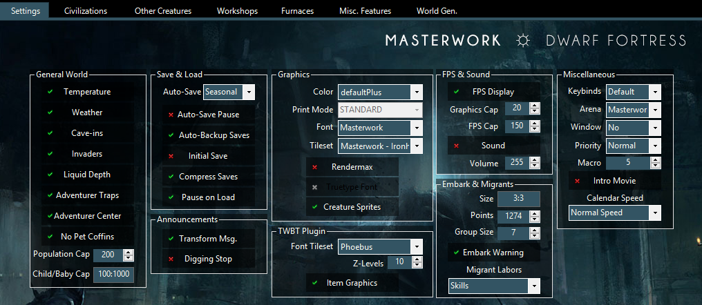

|
GUI GUI stands for Graphical User Interface. In this case the Masterwork Dwarf Fortress.exe, a program that allows you to alter the mod. It includes a init editor, installing tilesets, links, all utilities that are included in the pack, a worldgen editor and settings that range from adding/removing single workshops to entire industries. It also allows to make the game harder or easier, change the factions and civs, and lets you decide what race to play. Every single button has a tooltip, so if you want specific information about a single setting, just hover your mouse over it. It takes a few seconds to start up, as well as the newest version of .NET-Framework, and please run it in admin mode. Lets have a look at the tabs first. MDF, Utilities and Profiles. MDF is full of misc features, you can start DF, open specific folders, the manual, links in the forum, find other mods, have a look at the awesome online item database DFDB, change the theme, get to the donate page and get some background info. Utilities show icons and names of all included programs. Simply click on an icon, and the utility will start. Makes it easy to find everything. Profiles allows to save/load your settings, or even import from other peoples settings, if they send them to you. You can also reset everything to default here.
The first page of the GUI is the init editor and the graphic settings. You can change temperature and weather, save and load settings, install from 25 different tilesets, change fonts and color schemes, FPS and embark group size. All changes that affect every race across every world. Twbt Settings are advanced graphical settings. It adds unique item sprites, multi-z-level view up to 15 levels at once, and the tileset for the fonts. A important unique settings is calender speed. All creatures still move at the same time, but you have more (or less) time between events, like caravans, sieges and migrants. It can be changed in a running fort as well, but you need to close DF and start it again.  |


Second page sets the civilizations. You can completely remove civs, make them playable in either fort or adventure mode, change their alliances, determine how early they trade or attack, if their caravans have guards, how the AI behaves in sieges, what type of materials they bring, how high their combat skill is and in which season they are active. You can literally rebalance everything about a civ, and make groups and teams as you like. Legendary kobold siegers that save your babysnatching humans from the good warlocks? Can be done.
b
This page allows even more additional enemies to fight. 15 Fortress Defense races and 4 underground civs that attack from the caverns. You can also add or remove most of the modded creatures, separated by groups. On the top right you see the most interesting feature: Random creatures. Make completely procedually generated content, creatures, civs and megabeasts for your world. Different every time and hilarious to see.

The Workshop page allows you to add or remove the new modded workshop for Dwarf Mode. People often like to play closer to vanilla DF, so I made all new industries in Dwarf Mode optional. Other races always have their intended workshops. In special cases removing a workshop also removes the feature from the game, for example if you remove the Guildhall, you will also disable all guild dwarves.

The Furnace page follows the same pattern. Add or remove modded furnaces to Dwarf Mode. Simple enough. Some features are disabled when you disable the fitting furnace, for example without the slag pit you shouldnt see any slag in the game, and if you remove the School of Wizardry, you also remove all dwarven mages.

Misc Features are probably the most changed options. Standardization allows to remove redundant conent or simplify for example all "cat leather, dog leather, horse leather" into "leather". These options greatly help FPS and I recommend leaving them as they are. Miscellaneous controls some regional effects, nobles, can set your dwarven names to full english (Urist means Dagger for example), and are generally mostly for flavor.
Extra Reactions add some more uses to vanilla DF workshops, while the Balance Changes can make the game harder or easier. Except for Aquifers and Diseases, these are on by default.
Additional mods add complete plugins by other modders. Currently thats Flora&Fauna, Fear the Night, Digging Invaders and Dwarf Chocolate.

The last page is a world generator. It stands between the standard worldgen and the advanced worldgen. It has more option than standard, but you cant break the worldgen like the advanced one would allow. It should be relatively save to use this middle option, especially for players that havent meddled with world generation before. You can edit specific templates, or all at once. These settings can even be saved in the GUI profiles mentioned above.